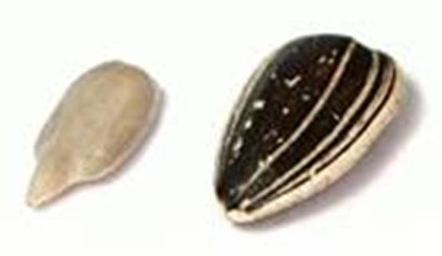
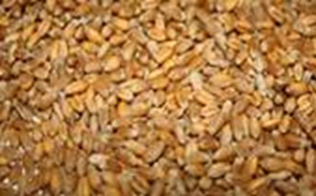
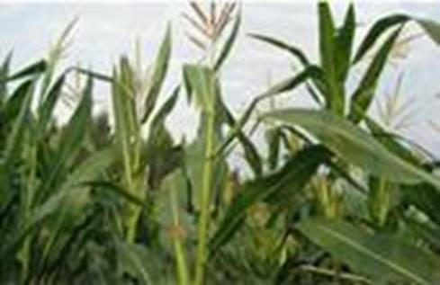
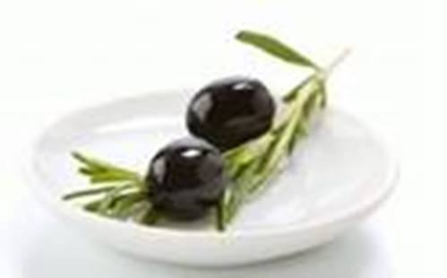
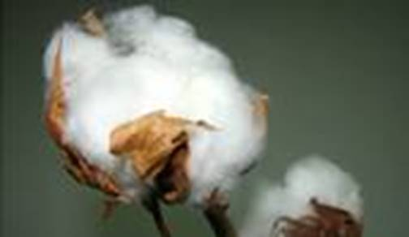
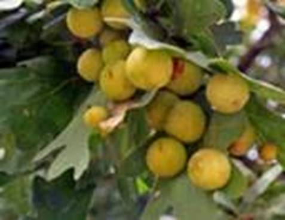

Общие сведения
Для понимания работы растительного организма необходимо знание его строения.
Все живые существа состоят из органических и минеральных веществ.
Органические вещества – сложные соединения углерода.
Неорганические (минеральные) вещества – все остальные химические соединения (вода, соли).
Вода – главное минеральное соединение, входящее в состав живых организмов.
Органические соединения растений
Важнейшие классы органических соединений:
· Белки
· Жиры
· Углеводы
· Нуклеиновые кислоты
Они используются для запасания энергии, построения тела растения, передачи наследственной информации.
Отличия в содержании веществ
Различные органы различных растений содержат неодинаковое количество минеральных и органических соединений. Так, в листьях капусты воды до 90%, а в плодах огурца – до 96%. А созревшие семена растений содержат 5-15% воды. Больше всего минеральных солей в листьях (10-15%) и стеблях (4%).
Ткани растений богаты углеводами: целлюлоза, крахмал, сахароза, фруктоза и др.
Одни и те же части растений разных видов могут иметь разный химический состав. Так, зерновки пшеницы содержат в 2 раза больше воды, чем семянки подсолнуха (см. Рис. 1). А органических веществ в семянках подсолнуха больше.

Рис. 1. Семянка подсолнуха
Во всех семенах растений органических веществ больше, чем неорганических. Это связано с тем, что для развития зародыша необходимо много энергии, которая содержится в органических веществах. А воду и минеральные вещества зародыш получает из почвы.
В плодах пшеницы (см. Рис. 2) белков 13%, углеводов 69%, жиров 2%. В семенах подсолнуха белков 26%, углеводов 16%, жиров 44% и более.

Рис. 2. Плоды пшеницы
Витамины
Витамины – органические вещества, которые вырабатываются организмами. Наш организм не способен к их выработке, а растительный способен. Поэтому для их получения нам необходимо потреблять растительную пищу.
В случае недостаточного потребления витаминов у человека развиваются авитаминозы, приводящие к различным заболеваниям.
Недостаток какого-либо вещества в растительной клетке приводит к замедлению роста растения, нарушению нормального развития, гибели.
Значение веществ растений для человека
Человек использует вещества, содержащиеся в организмах растений.
Для получения круп и муки, богатых углеводами, выращивают пшеницу, кукурузу (см. Рис. 3), гречиху.

Рис. 3. Кукуруза
Семена бобов, сои, чечевицы и др. богаты белками.
Подсолнечник, соя, рапс, оливы (см. Рис. 4) используются для получения пищевых растительных жиров. Это масличные растения.

Рис. 4. Плод оливы
Лен, хлопчатник (см. Рис. 5), конопля используются для получения технических масел.

Рис. 5. Хлопчатник
Также растения используют для получения натурального каучука, спирта, скипидара и др. Растения служат сырьем для медицинской и косметической промышленности. Их используют для изготовления кремов, мазей, сиропов, настоек и других лекарственных препаратов.
Химический состав растений
Положите в пробирку кусочки корня, листьев, стеблей или несколько семян растения. Нагрейте на медленном огне. Посмотрите, что появилось на стенках пробирки.
Возьмите кусочек теста. Оно приготовлено из муки, приготовленной из семян растений. Таким образом, оно имеет сходный с семенами растений химический состав. Положите кусочек теста в плотный мешочек, свернутый из нескольких слоев марли. Налейте в стакан воды и промойте в ней мешочек с тестом. В марлевом мешочке останется богатая белками клейковина. В стакан с оставшейся после промывания теста мутной водой добавьте 2-3 капли йода. Капните йодом на срез клубня картофеля. Опишите наблюдения в обоих случаях.
Положите на белую бумагу семена льна, подсолнечника или других масличных культур. Раздавите их. Что появилось на бумаге? К какому классу органических веществ оно относится?
Сделайте вывод об основных классах органических веществ, входящих в состав растений.
Нагрейте высушенные части растений на металлической пластинке. Постепенно органические вещества начнут сгорать – части обуглятся, появится дым. В итоге останется зола – несгорающие минеральные вещества.
Сделайте общий вывод о веществах-компонентах растения. Запишите его.
Растительные яды
2 важных класса органических веществ растений: алкалоиды и гликозиды. Названия происходят от латинских названий растений, из которых те впервые были получены. Человек употреблял растения, содержащие алкалоиды и гликозиды задолго до открытия этих веществ. Так, эфедра двуколосковая (см. Рис. 6) и опийный мак использовались в медицине.

Рис. 6. Эфедра двуколосковая
Растения, содержащие алкалоид стрихнин, использовались индейцами для отравления стрел.
Экстракты многих растений, содержащих гликозиды, сильно действуют на сердце, и использовались еще в античной медицине для возбуждения сердечной деятельности.
Многие растительные яды до сих пор используются в медицине, например атропин, который используется в офтальмологии.
Знаете ли вы, что…
Из камбия сосны получают заменитель ванили – ванилин. Из смолы хвойных деревьев получают канифоль, скипидар и сургуч. Кора дуба или ивы используется при дублении кожи.
Из чернильных орешков (см. Рис. 7) – паразитов листьев дуба получали чернила в XIX веке.

Рис. 7. Чернильные орешки
Список литературы
1. Биология. Бактерии, грибы, растения. 6 кл.: учеб. для общеобразоват. учреждений / В.В. Пасечник. – 14-е изд., стереотип. – М.: Дрофа, 2011. – 304 с.: ил.
2. Тихонова Е.Т., Романова Н.И. Биология, 6. – М.: Русское слово.
3. Исаева Т.А., Романова Н.И. Биология, 6. – М.: Русское слово.
Дополнительные рекомендованные ссылки на ресурсы сети Интернет
1. Biolicey2vrn.ucoz.ru (Источник).
2. Lechebnik.info (Источник).
3. Riums.ru (Источник).
Домашнее задание
1. Биология. Бактерии, грибы, растения. 6 кл.: учеб. для общеобразоват. учреждений / В.В. Пасечник. – 14-е изд., стереотип. – М.: Дрофа, 2011. – 304 с.: ил. – с. 156, задания и вопросы 4, 5 (Источник).
2. Из каких веществ состоят растения?
3. Назовите основные классы органических веществ. Какова их функция?
4. * Подготовьте небольшое сообщение о химическом составе лекарственных растений. Поделитесь этой информацией со своими друзьями, родственниками.